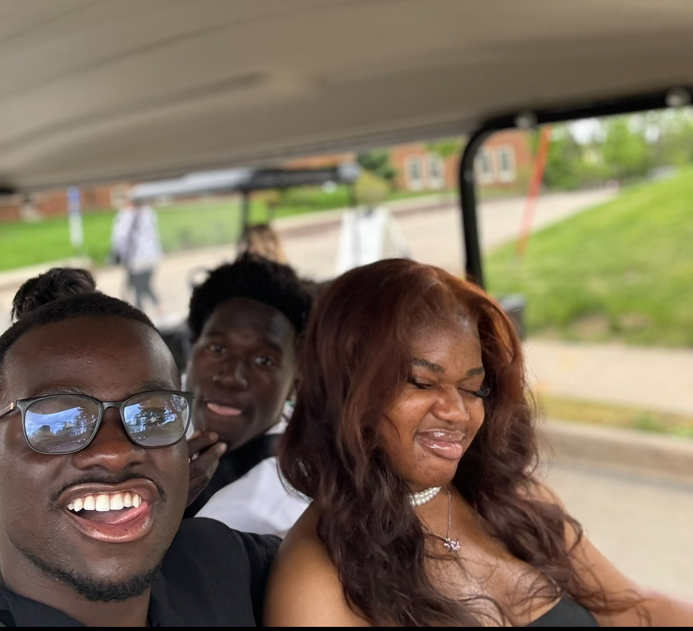
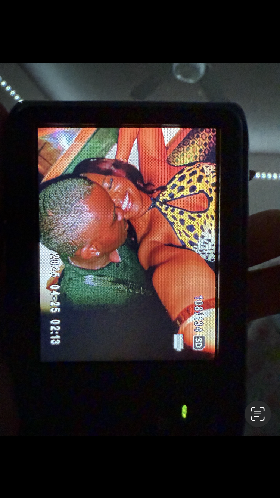
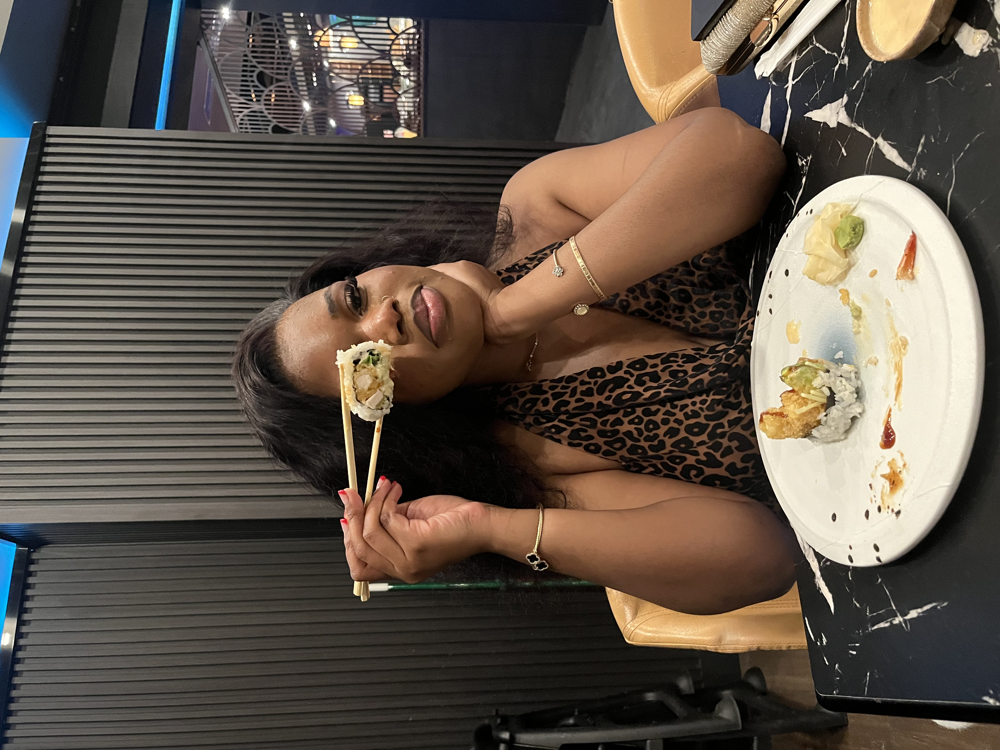

Your laugh is my favorite song, your warmth my safe harbor—
cozier than the sun.
What about my eyes gives off kindness?
Can you become so entranced in these beautiful, dark, kind eyes that you lose yourself?
Give yourself, be yourself, to leave yourself?
Tell me, what do you see when you look at me?
Tell me, what do you see when you see my lips?
These lips that speak sweet words and psalms of melodies to you.
Tell me, what do you hear when you’re so near
that you can hear my heartbeat?
This heartbeat of mine beating faster and faster as you get closer and closer.
Tell me, what do you feel when you grab these shoulders
and my hands wrap around your waist?
As we intertwine, spinning to the music, do you think you could lose me?
Do you believe we could be?
Spinning endlessly as our fingertips touch, our minds grow near and near.
What do you hear?
As we embrace each other emotionally and physically,
can you tell me what you see? What do you feel?
Will you let me swallow you whole,
enveloping us both in each other? I hope I’m not a bother… sometimes I wonder.
As you read this, do you wonder, “Can he lead me?”
Like two tango partners, I’m leading the steps
as you follow, do you find comfort?
Can you conform to your true feelings,
let loose, and let go, but never let go of these hands?
These hands that slightly touch, these lips that softly tell,
these words that you fell for.
With me, do you want to be led?
Like a closed book, do you want to be…
— [Sulemani Samuel]
Our One-Year Anniversary
A Year of Us ❤️
From our very first hello to this beautiful milestone, every second with you has been magic.
Your Smile 😊

That smile lights up even my darkest days. Thank you for making me feel at home.
Our Adventure 🗺️

Every new place becomes my favorite place when I'm with you.
Laugh-Filled Days 🎡

We’ve shared laughter, snacks, and the best company—every moment priceless with you.
Cozy Evenings 🔥
Your warmth is my favorite blanket. Early mornings and late nights with you feel like home.
Sunset Strolls 🌅
You light up my day with your smile. Just thinking of your name makes my heart skip a beat.